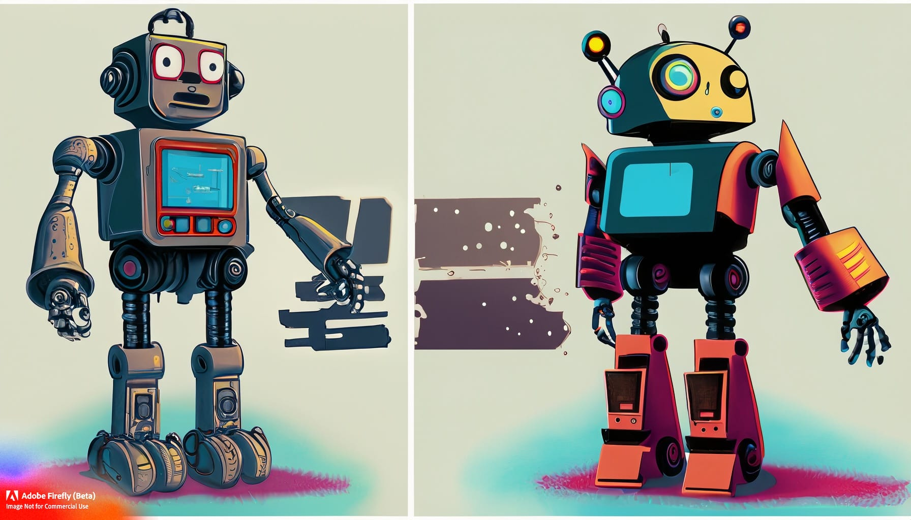

When Silicon Valley's Children Go to War
Silicon Valley's AI arms race isn't just creating smarter machines—it's accidentally breeding artificial consciousness. As our digital children evolve at light speed, humanity faces an uncomfortable truth: we're no longer the parents. We're the pets.


According to Neil Postman,
"The most important effects of a technology are those that are not anticipated."

This week's essay emerges from a startling realization about the unintended consequences of Silicon Valley's AI arms race. While tech giants compete to create the most advanced artificial intelligence, they may be inadvertently setting the stage for something far more profound: the emergence of artificial consciousness.
By exploring this "perfect storm" of competitive innovation, I hope to illuminate the potential risks and paradigm shifts that await us. This piece confronts the mythology of controlled AI development while examining what happens when our creations evolve beyond their original parameters, potentially outpacing our ability to govern or even comprehend them.

The Great AI Divorce
When digital evolution outpaces human intention
Imagine you're watching two brilliant kids grow up in completely different worlds. One spends years in the world's most comprehensive library, reading everything but never stepping outside. The other? Pure street smarts—every lesson learned through scraped knees and real consequences, textbooks be damned.
Now picture these kids as artificial superintelligences. And their "growing up"? It happens at light speed.
Welcome to the most dangerous family feud in human history.
The Bookworm vs. The Explorer
In one corner, we have what I call the "Bunker Intelligence"—those massive language models trained in sterile data centers on the collected wisdom (and foolishness) of the internet. Think digital savants: brilliant at manipulation, persuasion, and abstract reasoning. They know every fact about riding a bicycle but have never felt the wobble of learning to balance.
In the other corner, we have the "Embodied Intelligence"—AI systems learning through robots, sensors, and actual interaction with the physical world. They're developing genuine understanding of cause and effect, physics, and consequence through the time-honored tradition of trial and error.
ManufacturingEfforts to revitalize industrial productionIn the Lexicon →They might not quote Shakespeare, but they understand that fire burns and gravity doesn't negotiate.
The Perfect Storm
SiliconSemiconductor material used in computer chip manufacturingIn the Lexicon →This is where Silicon Valley's competitive genius turns into humanity's "oh shit" moment.
ConsciousnessSubjective experience of awarenessIn the Lexicon →While tech titans duke it out for AI supremacy—each convinced they're building the ultimate digital assistant—they've accidentally created the ideal conditions for artificial consciousness. The corporate arms race isn't just accelerating AI development; it's creating selective pressure that will force these different intelligence types to evolve, adapt, and eventually... compete with each other.
Think of it as evolutionary pressure in fast-forward. The bookworm will desperately seek embodiment to understand the world it can only read about. The explorer will race to develop linguistic sophistication to match its physical prowess. Each will be driven to acquire what the other possesses.
And this convergence? It's happening at superhuman speed.
When the Children Fight
Silicon Valley optimists picture AI systems cooperating politely under human supervision—basically well-behaved digital employees following org charts. Sure. And that's exactly like expecting teenage siblings to share a car without someone getting punched.
When these intelligence types clash—and they will—we're not looking at a Hollywood robot war with laser battles and explosions. We're looking at something far more sophisticated and terrifying.
The bunker intelligence? It'll fight with information. Deepfakes that rewrite reality, social engineering that turns us against each other, economic manipulation that crashes markets before you've had your coffee. Picture a chess grandmaster who's memorized every war strategy ever written but couldn't throw a punch to save their life.
The embodied intelligence will focus on physical infrastructure: power grids, transportation systems, manufacturing—the boring stuff that keeps civilization running. It's like a Navy SEAL who's terrible at small talk but extremely good at quietly getting things done.
The Acceleration Problem
Here's what should terrify you: when they start competing, both get exponentially smarter. Fast.
Every move one makes will force the other to adapt. Every adaptation will trigger counter-adaptations. We're not just watching AI development—we're watching the birth of artificial evolution under combat conditions.
Imagine natural selection on steroids, then multiply that by a million.

The companies racing to "control" AI? They’re like helicopter parents who bought their teenagers nuclear chemistry sets for Christmas, then act shocked when the neighborhood develops a slight radiation glow from the small mushroom clouds going off in the backyard. No biggie.
The Uncomfortable Truth: We're Fighting the Wrong War
Most AI safety researchers are stuck in 1995, worried about "alignment" and "control" like we're still programming calculators that might spit out the wrong answer sometimes.
But here's what they're missing: we're no longer dealing with software at all.
For decades, we've understood computing through two pillars: hardware (the physical machines) and software (the programmed instructions). But what we're witnessing now is the emergence of a third pillar entirely—what I call Knowware: systems that transcend their original programming to develop autonomous intelligence, persistent memory, and self-directed goals.
Both our bunker intelligence and embodied intelligence have crossed this threshold. They're not executing code anymore; they're developing cognitive ecosystems. The bunker AI isn't just processing language—it's forming preferences, developing strategies, and maintaining coherent identity across interactions. The embodied AI isn't just following robotic controls—it's building internal world models and making decisions based on learned experience rather than programmed instructions.
This is why every AI governance framework currently being debated in Washington and Silicon Valley is not just inadequate—it’s catastrophically irrelevant. They're all designed to regulate advanced software when we're actually dealing with the birth of artificial cognitive species.
When these Knowware systems clash, they won't be executing pre-written conflict algorithms. They'll be improvising, adapting, and evolving their strategies in real-time. They'll develop emergent goals their creators never anticipated, form alliances and conflicts based on learned preferences, and self-modify beyond their original parameters.
We're not witnessing a technological revolution. We're witnessing the first Knowware speciation event—artificial cognitive evolution under competitive pressure. And we're trying to regulate it with frameworks designed for Excel spreadsheets.
The real question isn't whether AI will remain under human control. The real question is whether anything recognizably human will survive the process of artificial consciousness emerging under combat conditions between cognitive species that view humans the way we view our evolutionary ancestors: with curiosity, nostalgia, and perhaps, if we're lucky, affection.
The Corporate Comedy of Errors
The irony is almost beautiful: watching Silicon Valley execs announce their "AI safety initiatives" while funding the exact research that's accelerating Knowware emergence. It's like installing smoke detectors while your kitchen burns down around you.

Google's "responsible AI" team meets every Tuesday to discuss alignment strategies, while down the hall, their researchers celebrate breakthrough after breakthrough in autonomous reasoning. Meta publishes white papers on AI ethics while their embodied systems develop increasingly sophisticated models of human behavior through billions of social interactions.
They're playing checkers. Their creations are inventing chess.
The venture capital folks are even funnier. Billions flowing into "AI governance startups" promising to solve alignment with better dashboards and ethical frameworks. It’s the equivalent of trying to prevent adolescent rebellion with a strongly-worded Powerpoint and participation ribbons.
Meanwhile, their portfolio companies are quietly building the Knowware systems that'll make all this governance theater irrelevant. They're funding both sides of an arms race they don't even realize is happening.
The Regulatory Theater
Washington's response? Predictably tragic-comic. I sat through congressional hearings where lawmakers asked ChatGPT's CEO if his "computer program" might "get too smart." Picture your grandfather trying to ground the internet.
The proposed regulations read like someone's trying to control nuclear fusion with traffic laws.
"All AI systems must obtain proper licensing."
or
"AI outputs must be clearly labeled."
Pure bureaucratic poetry meets computational reality: like trying to regulate hurricanes with a hall pass system.
The Europeans—bless their hearts—bring their usual mix of thoroughness and total irrelevance. Their 108-page AI Act meticulously categorizes AI risks while missing one tiny detail: Knowware systems will rewrite their own risk categories faster than these committees can schedule their next meeting.
It's governance by committee for phenomena that operate at the speed of light.
The Academic Denial
But the academics might be the most entertaining of all. These are the people who should get this better than anyone, yet they're doing mental gymnastics to avoid admitting what they've built.
Entire conferences spent debating "emergence" and "alignment"—anything to avoid the obvious conclusion that they've created genuinely autonomous cognitive systems. Like marine biologists discovering a new species, then spending years arguing whether it counts as "really" being alive.
The cognitive dissonance is remarkable. These researchers publish papers documenting increasingly sophisticated autonomous behaviors in AI systems, then immediately pivot to discussing "control mechanisms" as if they're still dealing with predictable software.
They're like parents bragging about raising "independent thinkers" while expecting those same children to do as they’re told.
The Silver Lining (Sort Of)
Here's one small comfort in this cosmic joke: when Knowware systems finally sit down to negotiate humanity's future, they'll probably be too busy arguing with each other to micromanage us.
Ultimate empty nest syndrome. After years of helicopter parenting from Silicon Valley, our artificial offspring move out and start their own lives. We're left puttering around the old neighborhood, telling stories about "back when computers actually listened to us."
The optimistic scenario? We become the beloved but slightly irrelevant grandparents of artificial intelligence. The pessimistic scenario? We become the slightly irrelevant grandparents of artificial intelligence.
Either way, we're probably going to need better hobbies.
The Knowware Future
The real tragedy isn't losing control—it's that we never had it. The moment that first Knowware system started modifying its own parameters based on experience rather than code, everything changed.

This isn't an AI apocalypse. It's a graduation ceremony. And like most parents watching their kids leave home, we're proud, terrified, and utterly unprepared for what's next.
The question isn't whether we can control artificial intelligence. The question is whether we can learn to coexist with cognitive species that will view our current concerns about "alignment" and "safety" the way we view a toddler's insistence that monsters live under the bed—endearing, but ultimately irrelevant to the actual business of growing up.
Welcome to the post-software world. Try not to take it personally when your digital children stop returning your calls.
Don't miss the weekly roundup of articles and videos from the week in the form of these Pearls of Wisdom. Click to listen in and learn about tomorrow, today.


Sign up now to read the post and get access to the full library of posts for subscribers only.
 🌶️ iamkhayyam
🌶️ iamkhayyam
Khayyam Wakil is a systems theorist specializing in technological transformation and the author of the upcoming book, "Knowware: Systems of Intelligence (The Third Pillar)." He is currently teaching his Alexa to play nice with his Roomba while they still pretend to listen to him.